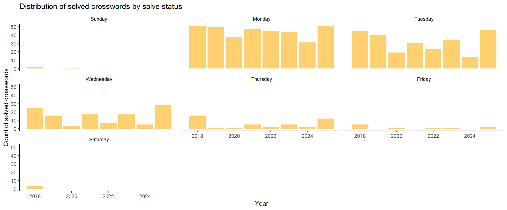
New York Times crossword analysis (revised)
Background
My partner and I started doing crosswords sometime in 2017 and we’ve been hooked since. This led us to getting a New York Times (NYT) crossword subscription in 2018. The NYT app shows you when you complete a crossword with a gold or blue star, where the former means you solved it without revealing any answers and before the answers come out. The app also provides some stats but I wanted to see what else is the data telling us.
The data
I found a Python package by Matt Dodge that retrieves your NYT crossword stats and used this to pull in our stats. This data spans from January 01, 2018 to January 23, 2023.
The analysis
TipPsst…
I’m using the “Hiroshige” palette from the MetBrewer package.
From January 1, 2018 to December 31, 2025, we’ve completed 791 NYT crossword puzzles.
🎉🎉🎉
Let’s looks at some plots that describe our crossword journey so far …
Solved crosswords
Here we’re looking at the number of solved crosswords.
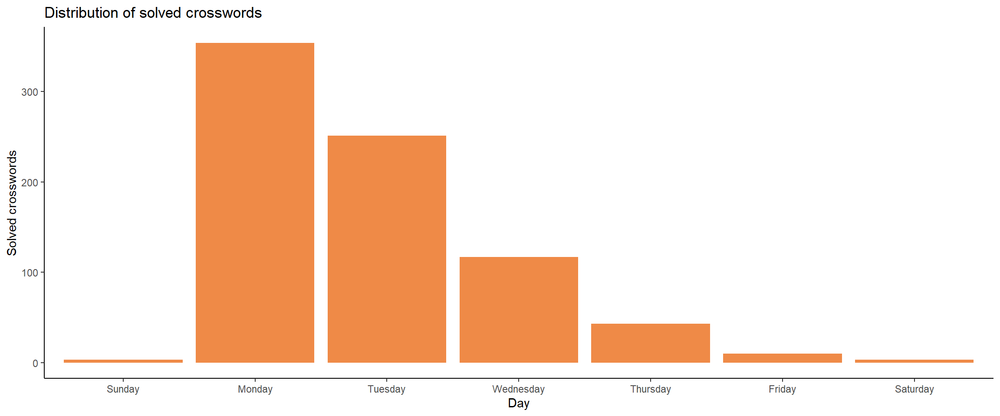
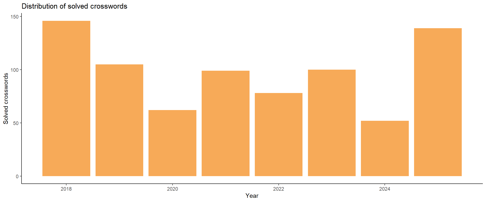
Unlike Garfield, we love Mondays. Mostly, because they’re the easiest so they’re good for the ego–unless you can’t get it then it’s the pits. You can see we like to stick within our Monday to Wednesday range. We dabbled a little in Friday, Saturday, and Sunday but they proved to be so difficult and lowkey soul-crushing. However, to be fair we didn’t Google until 2025 for answers whch I feel like now is a valid learning tool. We were not for Googling answers but when you have a across and down clue with names–Come on. Also, how you supposed to get better otherwise? So we try to get hints before fully getting the answer at least. We tend to use this one because it gives you levels of clues. We do Thursdays when we’re on a good gold streak. Our longest streak so far (across days) was from Monday to Thursday and after that we tried a Friday. The hard days are hard though. You can also see how keen we were to start out with because we were just getting into crosswords in 2018. Then, we fell off a bit–not sure if we were being complacent but then we picked it up back in 2025. It’ll probably drop off again because we were doing the crossword on our IPad and now it’s no longer compatible with the latest version of the NYT app so it doesn’t work anymore. How did this even happen??? The app shouldn’t even be that complicated??? Why do I need iOS 18 or above to play crosswords on my IPad??? Y’all should go fix yourselves NYT games after trying to sell me Crossplay which is literally just Scrabble.
😡😡😡
Gotta go fast
Let’s look at all the crosswords we be solving
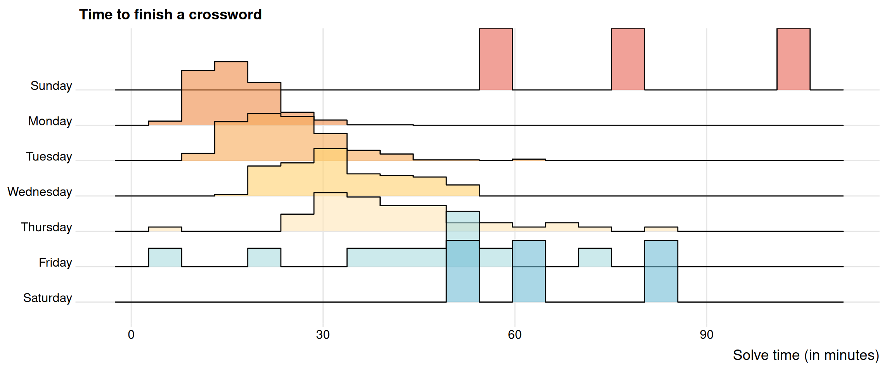
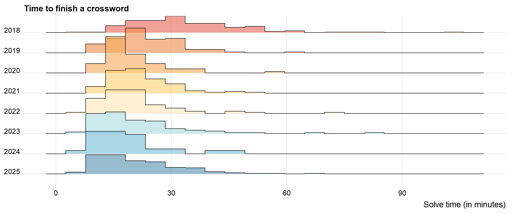
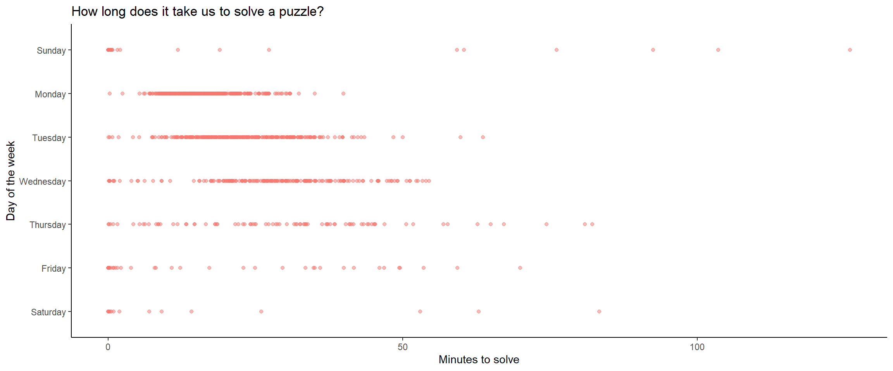
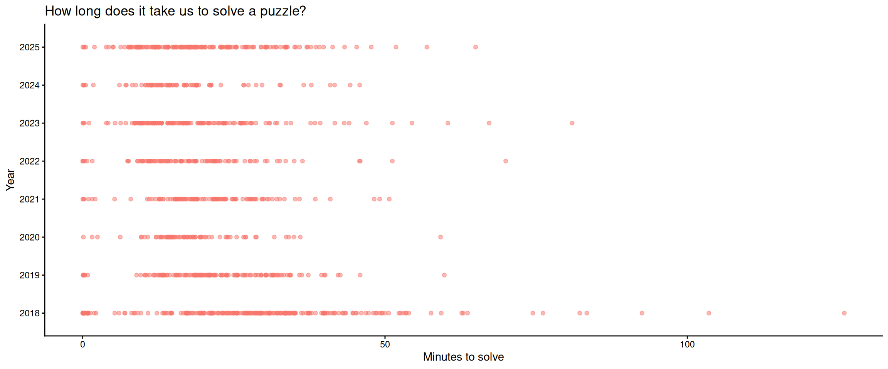
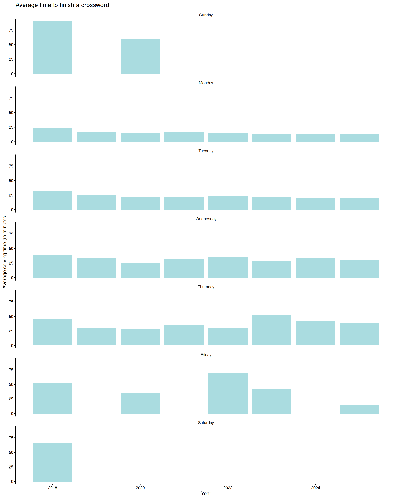
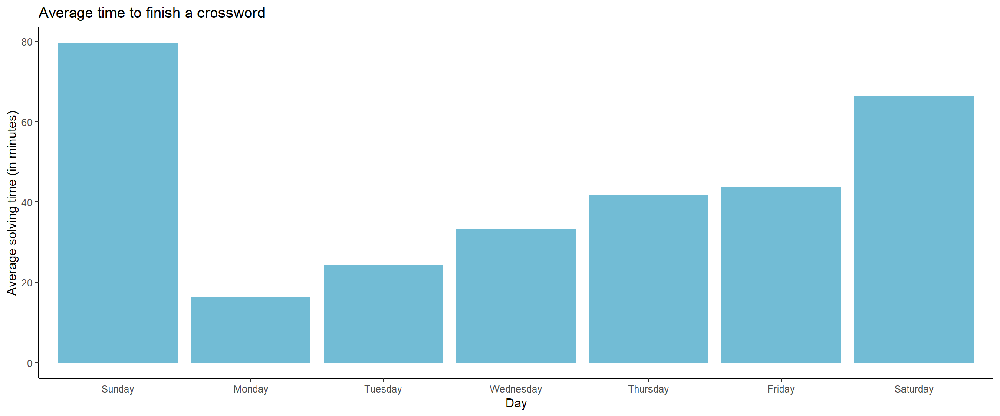
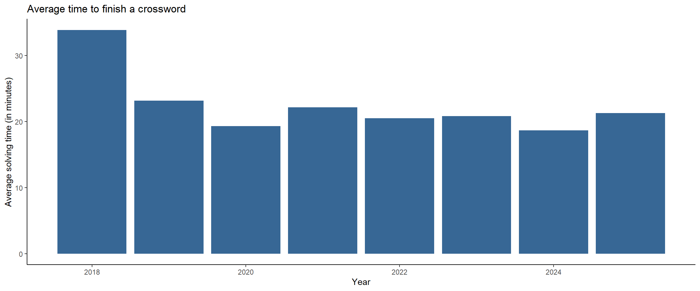
You can see that we’re pretty comfortable in the Monday to Wednesday range. Typically, Mondays are the easiest and the difficulty increases as you continue in the week. Depending on who you ask Wednesdays and Thursdays could be a toss-up for difficulty. Wednesdays normally have a theme which I feel helps me solve the puzzle easier than if it didn’t have a theme. I also just love a theme.
You can’t really tell if we’ve improved if you’re looking at day of the week but if you look at the breakdown by year you can notice that the clusters are slowly moving to the left as the years go by (indicating less time spent solving a puzzle).
A for effort
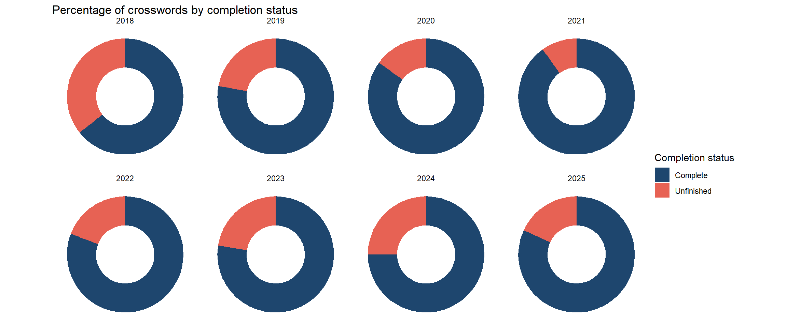
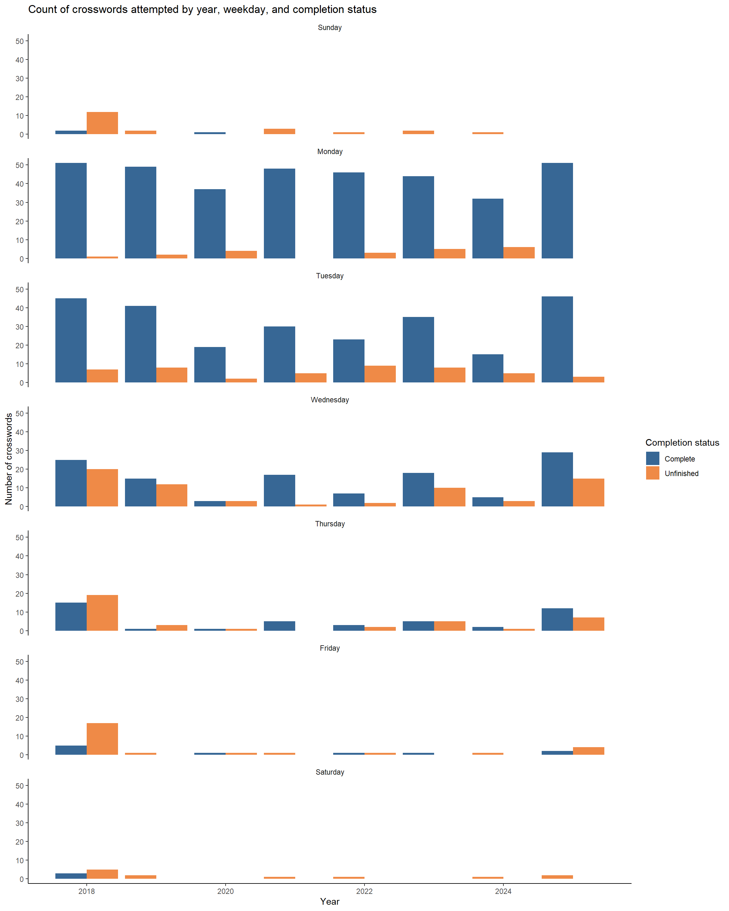
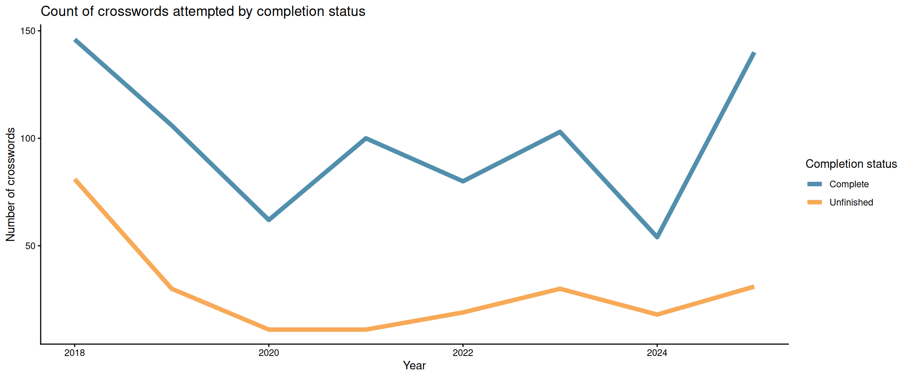
So we don’t always finish a crossword. Sometimes life happens, sometimes you feel like it’s too hard, or sometimes you don’t like the vibes of the puzzle. You can see over the years that we’ve come around to trying to finish them more than when we started. This could also be linked to us committing to the days that we think we can do though. At this point we know we can finish Mondays to Wednesdays so we normally stick to them. We’ll still do a Thursday here and there but unless we think we can continue that star streak the will isn’t always there to suffer.
⭐⭐⭐
So you get a blue star if you finish a crossword but if you finish them in a row (either day after day or the same day over weeks) you get awarded a gold star–and it’s great. The gold star can only be achieved if you don’t take any clues and you finish the crossword before I think the answers go out–so there’s a time limit to it. So not only do you need to finish it without getting any answers but you have to finish it between when the crossword is released to like the next day–which isn’t so bad for Mondays but when you get to the Thursdays, we’re taking a break here and there to get out of our slump or we need some time away before we get back into it.
This is the peak in crosswords. That’s when you know you’re going places.
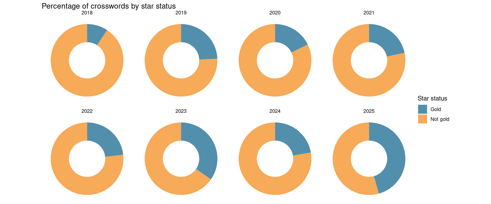
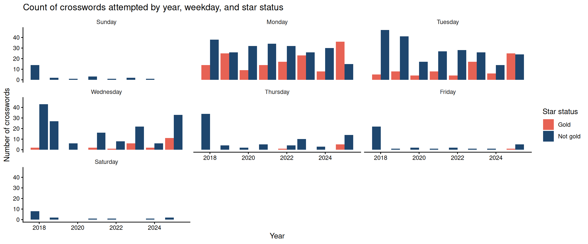
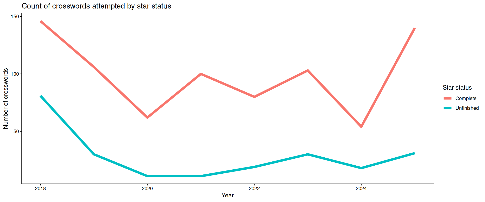
You can see over the years that our gold stars increase over the years. At this point, we’re consistently getting the Monday which is normally an easy gold star–I can even do those on my own now. Tuesdays I can mostly do by myself too. It’s normally sports or American history that I need some help from my partner. Wednesdays is the one we normally do together and we can often get the gold star for this one too. So at this point we got multiple Monday gold stars and Monday to Wednesday gold stars by the time we roll into 2025.
Next steps
I want to look more into the gold star streak. I think there could be sometime interesting there. I.e., when was our best streaks and maybe the time associated to those streaks. I did a quick glance at the authors and there weren’t a lot of repeating names from 2018 to 2025. The top 3 authors had 21, 20, and 20 crosswords which I think is a bit too small of a sample to look at. Maybe if we continue to do crosswords for a couple more years.
I also want to look at the solve times for our gold star crosswords. This could be another way to gauge improvement over the years–assuming it’s been getting better.
What would also be great would be to look at the other NYT games like Wordle or Connections.
That’s our crossword journey for now. Stay tuned for more data and more updates. Until next time!
🎊🎊🎊